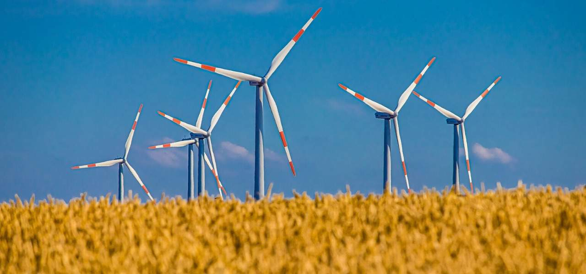

Garantir o acesso a fontes de energia fiáveis, sustentáveis e modernas para todos
Objetivos
Até 2030, assegurar o acesso universal, confiável, moderno e a preços acessíveis a serviços de energia
Até 2030, aumentar substancialmente a participação de energias renováveis na matriz energética global
Até 2030, dobrar a taxa global de melhoria da eficiência energética
Até 2030, reforçar a cooperação internacional para facilitar o acesso a pesquisa e tecnologias de energia limpa, incluindo energias renováveis, eficiência energética e tecnologias de combustíveis fósseis avançadas e mais limpas, e promover o investimento em infraestrutura de energia e em tecnologias de energia limpa
Até 2030, expandir a infraestrutura e modernizar a tecnologia para o fornecimento de serviços de energia modernos e sustentáveis para todos nos países em desenvolvimento, particularmente nos países menos desenvolvidos, nos pequenos Estados insulares em desenvolvimento e nos países em desenvolvimento sem litoral, de acordo com seus respectivos programas de apoio

Soluções
Assegurar o acesso universal, confiável, moderno e a preços acessíveis a serviços de energia
-Expandir o acesso à eletricidade em áreas rurais e remotas por meio de micro-redes e sistemas de energia descentralizados.
-Promover programas de financiamento para tornar as tecnologias de energia acessível a comunidades de baixa renda.
-Implementar políticas para reduzir o desperdício de energia e garantir uma distribuição justa de custos.
Aumentar substancialmente a participação de energias renováveis na matriz energética global
-Estabelecer metas ambiciosas de energias renováveis e criar políticas de incentivo, como tarifas de alimentação, subsídios e incentivos fiscais.
-Investir em pesquisa e desenvolvimento de tecnologias de energias renováveis, como solar, eólica, hidrelétrica e biomassa.
-Promover a capacitação técnica para profissionais na área de energias renováveis.
Dobrar a taxa global de melhoria da eficiência energética
-Implementar normas de eficiência energética rigorosas para edifícios, veículos e aparelhos eletrodomésticos.
-Incentivar a adoção de práticas de eficiência energética nas indústrias e setores de transporte.
-Educar o público sobre práticas de uso eficiente de energia.
Reforçar a cooperação internacional para facilitar o acesso à pesquisa e tecnologias de energia limpa
-Criar parcerias internacionais para compartilhar conhecimento, recursos e tecnologias relacionadas à energia limpa.
-Estabelecer fundos internacionais para apoiar países em desenvolvimento na adoção de tecnologias de energia limpa.
-Facilitar a transferência de tecnologias de energia limpa por meio de acordos bilaterais e multilaterais.